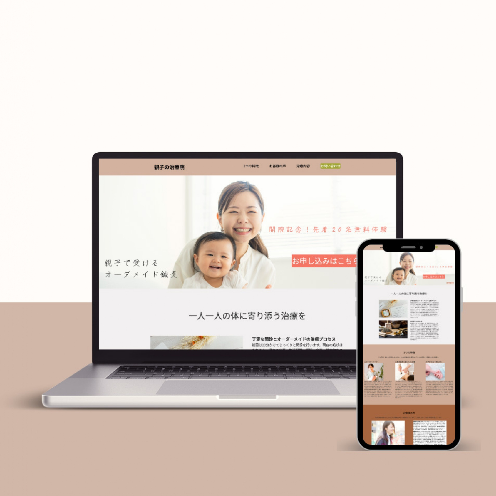

鍼灸院ランディングページ（自主制作）
ペルソナ設定から構成設計、デザインカンプ作成、HTML/CSSコーディングまで一貫して制作。 医療分野のため、安心感・信頼感を重視した配色と情報整理を行いました。
医療・福祉分野での実務経験を経て、Webデザインを学びました。 本ポートフォリオは、HTML／CSSの基礎的な実装力と、 決められたルールに沿って正確に制作・更新する力を お伝えすることを目的に制作しています。
※本サイトはHTML／CSSで実装し、GitHubにてソースコードを公開しています。
パソコンが苦手な方でも、
安心して相談できるWeb制作
中小企業・医療・教育関係者様へ。
難しい専門用語は使わず、丁寧なヒアリングで
「伝わる」ホームページをお作りします。

Web制作は専門用語が多く、初めての方には不安なことも多いかと思います。
私は「丁寧な説明」と「安心感」を大切に活動しています。
お客様の事業への想いをしっかりとヒアリングし、
デザインの力でその想いを届けるお手伝いをさせていただきます。
ペルソナ設定から構成設計、デザインカンプ作成、HTML/CSSコーディングまで一貫して制作。 医療分野のため、安心感・信頼感を重視した配色と情報整理を行いました。
既存サイトをもとに、構成・ビジュアルを整理しデザインを改善。 トーン＆マナーを崩さず、視認性と導線を意識して調整しました。
WordPressを使用し、ご自身で更新しやすい構成を意識して制作。 お知らせや実績の追加など、運用を想定した設計を行いました。